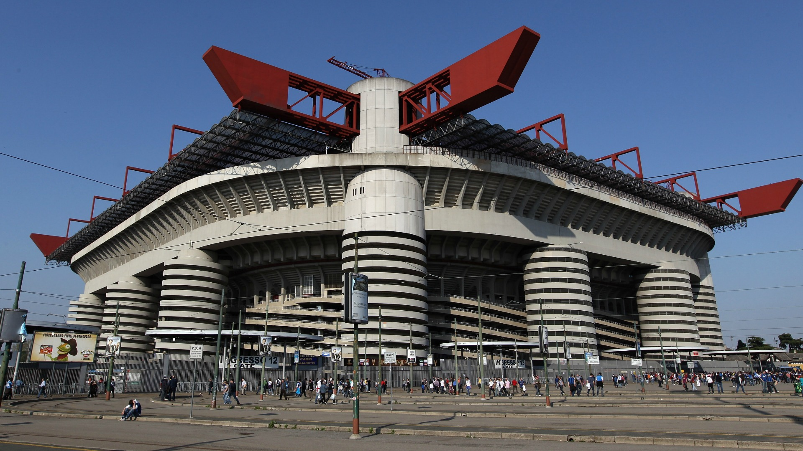

Associazione Calcio Milan, commonly referred to as A.C. Milan or simply Milan,
is a professional football club in Milan, Italy, founded in 1899. The club has
spent its entire history, with the exception of the 1980–81 and 1982–83
seasons, in the top flight of Italian football, known as Serie A since
1929–30.
The San Siro Stadium was built between 1 August 1925 and 15 September 1926.
In just over a year a structure capable of containing 35,000 spectators was
erected. It cost about 5 million Italia Lira to build and the construction
was financed by then AC Milan president Piero Pirelli.